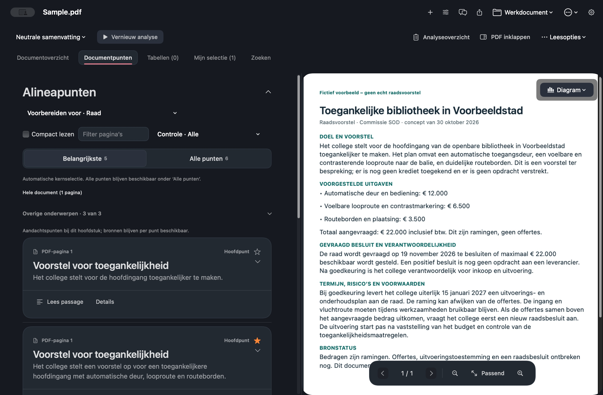
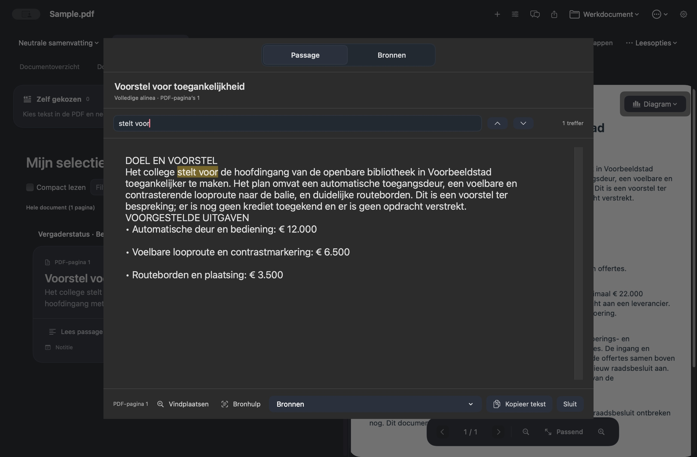
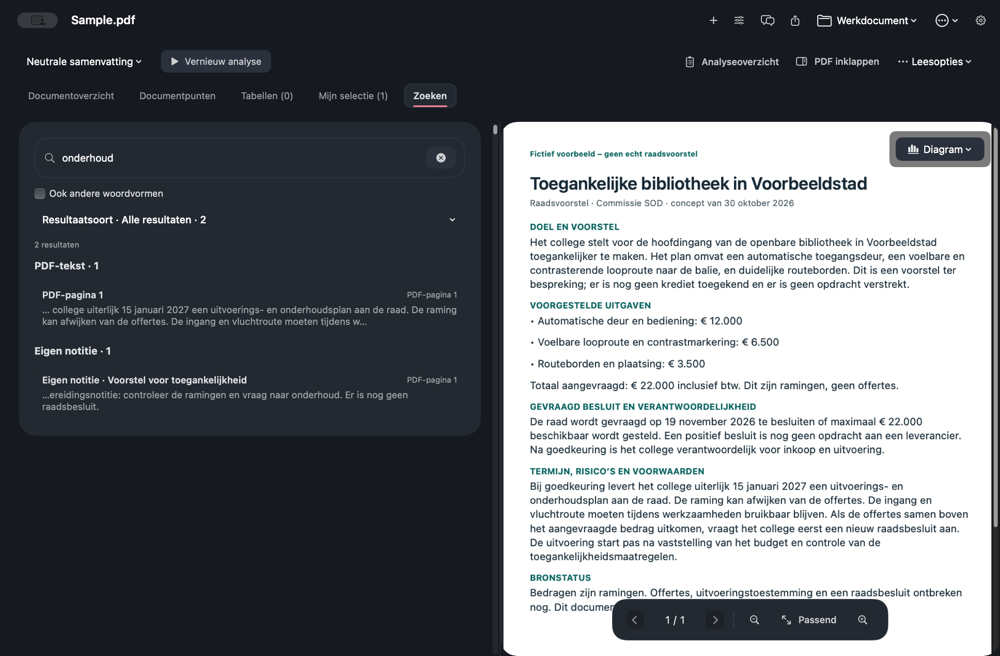

Neutrale start
Lees eerst de samenvatting en punten zonder partijprogramma als uitgangspunt.

Een Mac-app voor raads- en commissiestukken
Lees het hele voorstel, volg een aandachtspunt terug naar de bron en neem je eigen notities mee. CommissieWijzer houdt de pdf en je voorbereiding bij elkaar.
Rustige voorbereiding, punt voor punt
Open een pdf met een leesbare tekstlaag en CommissieWijzer zet de tekst naast je voorbereiding. Je kunt eerst de neutrale samenvatting lezen, zonder een partijprogramma te kiezen. Aandachtspunten zijn gekoppeld aan passages en pagina’s in het oorspronkelijke stuk. Zo kun je controleren of een voorstel, verzoek of besluit juist is weergegeven. Via ‘Lees passage’ open je een gekozen citaat met de omliggende tekst. Zoek ook binnen die passage als je een term of formulering wilt terugvinden. Markeer punten voor Mijn selectie en zet ze in de volgorde die bij jouw bespreking past. Geef elk geselecteerd punt een status zoals bespreken, vraag stellen of afgehandeld. Voeg een eigen notitie en een markering voor je broncontrole toe; bij gewijzigde AI-uitleg moet je de bron opnieuw controleren. Bewaar de beschikbare voorbereiding als werkdocument of stel zelf samen wat je als pdf wilt delen.
Lees eerst de samenvatting en punten zonder partijprogramma als uitgangspunt.
Open een citaat met paginaverwijzing en beoordeel het in de context van de pdf.
Lees afbeeldingstabellen lokaal met OCR; controleer cellen, cijfers en kolommen aan de bron.
Markeer punten en bepaal zelf hun volgorde voor de bespreking.
Geef een geselecteerd punt de status bespreken, vraag stellen of afgehandeld.
Bewaar vragen en opmerkingen bij punten of zelfgekozen bronpassages.
Markeer je eigen controle en herhaal die als de AI-uitleg later verandert.
Zoek lokaal in pdf-tekst, beschikbare resultaten en notities; filter punten op pagina of controle.
Bewaar de pdf, beschikbare analyses, selectie, notities en leespositie om later verder te werken.
Kies bereik en onderdelen, bekijk de pdf-voorvertoning en controleer die vóór je deelt.
Voor pdf’s zonder doorzoekbare tekst is eerst tekstherkenning (OCR) nodig. OCR kan fouten maken; controleer herkende tekst, tabellen en cijfers in de afbeelding.
Van document naar bespreking
Een rustige, interactieve rondgang met echte appbeelden en een volledig fictief raadsvoorstel. De website verwerkt zelf geen documenten.
DOCUMENTPUNTEN
De echte appweergave toont aandachtspunten links en de oorspronkelijke fictieve voorbeeld-pdf rechts.
BRONPASSAGE
Open de gekoppelde passage in de pdf. Lees de volledige context en controleer zelf bedragen, voorwaarden en besluitstatus.
MIJN SELECTIE
De echte appweergave laat zien hoe een punt, persoonlijke controle en voorbereidingsnotitie bij elkaar staan.
LOKAAL ZOEKEN
Zoek lokaal in de pdf, beschikbare resultaten en notities. Een resultaat verwijst terug naar de relevante pagina.
Echte appbeelden met volledig fictief raadsvoorstel

Dit zijn echte appbeelden. Het raadsvoorstel en de voorbereidingsnotitie zijn volledig fictief. De website verwerkt geen documenten.
Van punt terug naar tekst
Een AI-punt vertelt wat de analyse opvalt. De bronpassage laat zien waarop die observatie rust. Open de pagina, lees de context en bepaal zelf of het punt klopt.
AI-uitkomsten kunnen onjuist of onvolledig zijn. CommissieWijzer neemt je eigen broncontrole niet over.
Een echt appbeeld · gekoppelde bronpassage

Jouw werkruimte
Bekijk echte schermbeelden en lees hoe deze functies in de Mac-app werken. Deze website opent geen documenten en voert geen analyse uit.
Zoeken doorzoekt lokaal de pdf-tekst en beschikbare analyse, resultaten en notities. Resultaten verwijzen terug naar de relevante pagina.
Meer over pdf-inlezen
Jij kiest de provider
Na pdf-import start de analyse met de provider die in Instellingen staat. Lees en zoek ook lokaal, en bekijk eerder opgeslagen werk wanneer AI niet beschikbaar is.
CommissieWijzer vereist macOS 14 of later. Bij ChatGPT worden de voor de taak benodigde documentfragmenten en eventueel je gekozen programma naar OpenAI gestuurd. Lees wat per provider wordt verwerkt.
Voorbereiding met de bron in beeld
De app is ingediend bij Apple en wacht op beoordeling. Bekijk ondertussen de werkwijze, het privacybeleid of de projectbron.